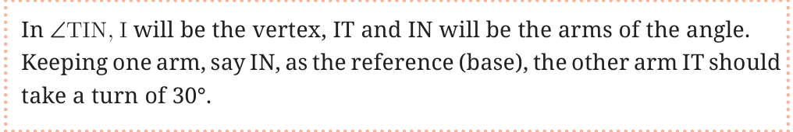
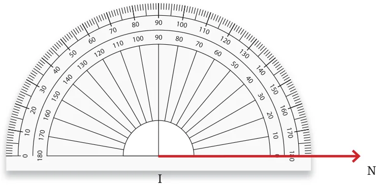
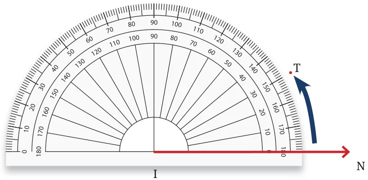
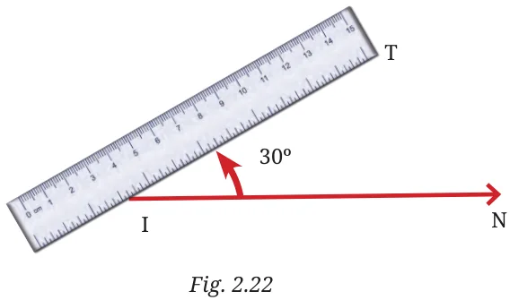

<!DOCTYPE html>
<html lang="en">
<head>
<meta charset="UTF-8">
<meta name="viewport" content="width=device-width,initial-scale=1">
<title>2.10 Drawing Angles — Lines and Angles</title>
<meta name="description" content="Class 6 Mathematics · Lines and Angles · 2.10 Drawing Angles">
<link rel="icon" href="data:image/svg+xml,<svg xmlns='http://www.w3.org/2000/svg' viewBox='0 0 100 100'><text y='.9em' font-size='90'>📘</text></svg>">
<link rel="stylesheet" href="../../../assets/book.css">
<link rel="stylesheet" href="https://cdn.jsdelivr.net/npm/katex@0.16.11/dist/katex.min.css" crossorigin="anonymous">
</head>
<body>
<header class="topbar">
<div class="topbar-in">
  <div class="crumb">
    <span class="c1"><a href="../../../index.html">Library</a> · <a href="../../index.html">Class 6 Mathematics</a></span>
    <span class="c2">Lines and Angles · 2.10 Drawing Angles</span>
  </div>
  <a class="tb-btn" data-nav="prev" href="../../02-lines-and-angles/20-figure-it-out/index.html" title="Figure it Out">←</a>
  <details class="drawer"><summary class="tb-btn" title="Sections in this chapter">☰</summary>
<div class="drawer-panel"><div class="dh">Lines and Angles</div><a href="../01-chapter-opener/index.html">Chapter opener; 2.1 Point</a><a href="../02-line-segment-2.2/index.html">2.2 Line Segment</a><a href="../03-line-2.3/index.html">2.3 Line</a><a href="../04-ray-2.4/index.html">2.4 Ray</a><a href="../05-figure-it-out/index.html">Figure it Out</a><a href="../06-angle-d-2.5/index.html">2.5 Angle D</a><a href="../07-figure-it-out/index.html">Figure it Out</a><a href="../08-comparing-angles-2.6/index.html">2.6 Comparing Angles</a><a href="../09-figure-it-out/index.html">Figure it Out</a><a href="../10-making-rotating-arms-2.7/index.html">2.7 Making Rotating Arms</a><a href="../11-special-types-of-angles-2.8/index.html">2.8 Special Types of Angles</a><a href="../12-figure-it-out/index.html">Figure it Out</a><a href="../13-figure-it-out/index.html">Figure it Out</a><a href="../14-measuring-angles-2.9/index.html">2.9 Measuring Angles</a><a href="../15-degree-measures-of-different-angles/index.html">Degree measures of different angles</a><a href="../16-unlabelled-protractor/index.html">Unlabelled protractor</a><a href="../17-figure-it-out/index.html">Figure it Out</a><a href="../18-labelled-protractor/index.html">Labelled protractor</a><a href="../19-figure-it-out/index.html">Figure it Out</a><a href="../20-figure-it-out/index.html">Figure it Out</a><a href="../21-drawing-angles-2.10/index.html" aria-current="page">2.10 Drawing Angles</a><a href="../22-figure-it-out/index.html">Figure it Out</a><a href="../23-types-of-angles-and-their-measures-2.11/index.html">2.11 Types of Angles and their Measures</a><a href="../24-figure-it-out/index.html">Figure it Out</a><a href="../25-figure-it-out/index.html">Figure it Out</a><a href="../26-summary/index.html">Summary</a><a href="../27-solutions/index.html">CHAPTER 2 — SOLUTIONS</a></div></details>
  <a class="tb-btn" data-nav="next" href="../../02-lines-and-angles/22-figure-it-out/index.html" title="Figure it Out">→</a>
  <button class="tb-btn" data-theme-toggle title="Toggle light / dark" aria-label="Toggle light or dark theme">◐</button>
</div>
<div class="progress"><span style="width:18.0%"></span></div>
</header>
<main class="wrap">
<div class="sec-head">
  <p class="eyebrow"><a href="../index.html">Chapter 2 · Lines and Angles</a></p>
  <h1>2.10 Drawing Angles</h1>
  <p class="sec-meta">Textbook pages 34–37 · 5 figures</p>
</div>
<article class="prose">
<p>Vidya wants to draw \(a 30 ^{\circ}\) angle and name it \(\angle TIN\) using a protractor.</p>
<figure class="fig wide"></figure>
<p>Step 1: We begin with the base and draw 𝐼𝑁:</p>
<p>Step 2: We will place the centre point of the protractor on I and align IN to the 0 line.</p>
<figure class="fig"></figure>
<p>Step 3: Now, starting from 0, count your degrees (0, 10, 30) up to 30 on the protractor. Mark point T at the label \(30 ^{\circ}\) .</p>
<figure class="fig"></figure>
<p>Step 4: Using a ruler join the point I and T. \(\angle TIN = 30 ^{\circ}\) is the required angle.</p>
<figure class="fig"></figure>
<p>Let’s Play a Game #1</p>
<p>This is an angle guessing game! Play this game with your classmates by making two teams, Team 1 and Team 2. Here are the instructions and rules for the game:</p>
<ul class="qlist">
<li><span class="mk">•</span><span class="lt">Team 1 secretly choose an angle measure, for example, \(49 ^{\circ}\) and</span></li>
</ul>
<p>makes an angle with that measure using a protractor without Team 2 being able to see it.</p>
<ul class="qlist">
<li><span class="mk">•</span><span class="lt">Team 2 now gets to look at the angle. They have to quickly</span></li>
</ul>
<p>discuss and guess the number of degrees in the angle (without using a protractor!).</p>
<ul class="qlist">
<li><span class="mk">•</span><span class="lt">Team 1 now demonstrates the true measure of the angle with</span></li>
</ul>
<p>a protractor.</p>
<ul class="qlist">
<li><span class="mk">•</span><span class="lt">Team 2 scores the number of points that is the absolute</span></li>
</ul>
<p>difference in degrees between their guess and the correct measure. For example, if Team 2 guesses \(39 ^{\circ}\) , then they score 10 points \((49 ^{\circ} - 39 ^{\circ}\) ).</p>
<ul class="qlist">
<li><span class="mk">•</span><span class="lt">Each team gets five turns. The winner is the team with the</span></li>
</ul>
<p>lowest score!</p>
<p>Let’s Play a Game #2</p>
<p>We now change the rules of the game a bit. Play this game with your classmates by again making two teams, Team 1 and Team 2. Here are the instructions and rules:</p>
<ul class="qlist">
<li><span class="mk">•</span><span class="lt">Team 1 announces to all, an angle measure, e.g., \(34 ^{\circ}\) .</span></li>
<li><span class="mk">•</span><span class="lt">A player from Team 2 must draw that angle on the board without</span></li>
</ul>
<p>using a protractor. Other members of Team 2 can help the player by speaking words like ‘Make it bigger!’ or ‘Make it smaller!’.</p>
<ul class="qlist">
<li><span class="mk">•</span><span class="lt">A player from Team 1 measures the angle with a protractor</span></li>
</ul>
<p>for all to see.</p>
<ul class="qlist">
<li><span class="mk">•</span><span class="lt">Team 2 scores the number of points that is the absolute</span></li>
</ul>
<p>difference in degrees between Team 2’s angle size and the intended angle size. For example, if player’s angle from Team 2 is measured to be \(25 ^{\circ}\) , then Team 2 scores 9 points \((34 ^{\circ} - 25 ^{\circ}\) ).</p>
<ul class="qlist">
<li><span class="mk">•</span><span class="lt">Each team gets five turns. The winner is again the team with the</span></li>
</ul>
<p>lowest score.</p>
<p>Teacher’s Note</p>
<p>These games are important to play to build intuition about angles and their measures. Return to this game at least once or twice on different days to build practice in estimating angles. Note that these games can also be played between pairs of students.</p>
</article>
<nav class="pager"><a class="" data-nav="prev" href="../../02-lines-and-angles/20-figure-it-out/index.html"><span class="dir">← Previous</span><span class="t">Figure it Out</span><span class="ch">Lines and Angles</span></a><a class="nx" data-nav="next" href="../../02-lines-and-angles/22-figure-it-out/index.html"><span class="dir">Next →</span><span class="t">Figure it Out</span><span class="ch">Lines and Angles</span></a></nav>
</main><footer class="site">Generated from the source textbook PDFs · text, figures and exercises belong to their respective publishers.</footer><script defer src="https://cdn.jsdelivr.net/npm/katex@0.16.11/dist/katex.min.js" crossorigin="anonymous"></script>
<script defer src="https://cdn.jsdelivr.net/npm/katex@0.16.11/dist/contrib/auto-render.min.js" crossorigin="anonymous"
  onload="renderMathInElement(document.body,{delimiters:[
    {left:'\\(',right:'\\)',display:false},
    {left:'$$',right:'$$',display:true},
    {left:'\\[',right:'\\]',display:true}],throwOnError:false,ignoredTags:['script','noscript','style','textarea','pre','code']})"></script>
<script src="../../../assets/book.js"></script>
</body>
</html>
